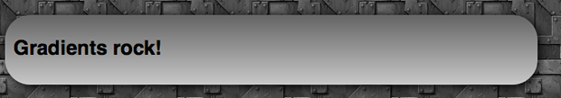
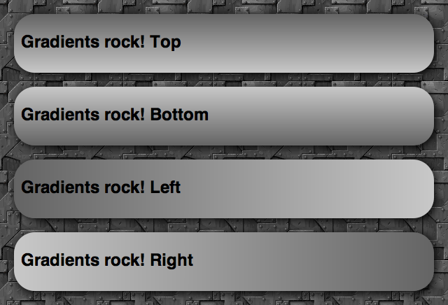
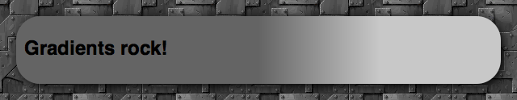
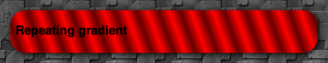
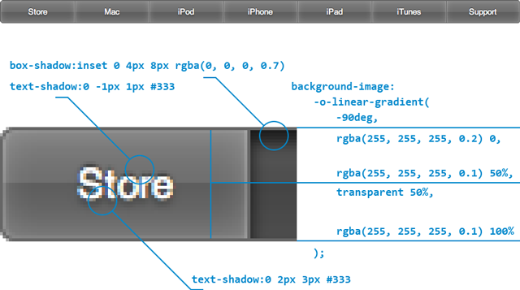

CSS3 linear gradients
Article update: 12th December 2012
The article has been updated to cover the gradient syntax covered in the (at the time of writing) latest Image Values and Replaced Content Module Level 3 specification, dated June 12th 2012.
Introduction
For as long as we can remember, we have used colour gradients on the Web to brighten things up, and add class to designs. If you want to create a fantastic looking button, panel, gauge, progress bar or other UI feature, a gradient is the way to go.
Up until now, we have always used repeated background images to create gradient effects. The CSS is simple, and creating a gradient using Photoshop, Fireworks, or another graphics tool is not hard. However, doing it this way is rather inflexible, given that if you want to vary the colour scheme or other features of the gradient, you need to go back to your graphics tool and create another image! Wouldn't it be better if you had complete control over the gradients using CSS?
CSS3 comes to the rescue with the CSS Image Values and Replaced Content Module Level 3: part of this module defines CSS gradients, which allow us to create any gradients we want using only CSS. In this article I will explore how to use linear and repeated linear gradients, which are supported across Opera 11.10+, Firefox 3.6+, Safari 5.03+ and Chrome 7+.
Note: Radial gradients are covered in the article CSS3 radial gradients.
Creating gradients
I have included some simple examples for you to play with in my linear gradients demo. Download this example and play with different values as you read through the sections below.
To create a basic linear gradient, you need to provide a start point and an end point, like so:
background-image: linear-gradient(rgb(100,100,100),rgb(200,200,200));This creates a simple gradient that goes from a darker grey at the top of the element the gradient is applied to, down to a lighter grey at the bottom, as seen in Figure 1. Here I'm applying it to a simple article element, but you can apply it to any block level element you like.

Figure 1: A really basic CSS3 linear gradient.
So why is the gradient applied as a background image and not a background colour, which might seem more appropriate? This is because of flexibility and familiarity. We always used to apply gradients using CSS background images, plus now you can use CSS multiple backgrounds to layer multiple images on top of gradients, if you like.
Because gradients are background images however, you can — and should — specify a fall back background-color. Imagine your page has a white background, and you have a button with a gradient background and white text above it. To prevent older browsers displaying white text on the white background of the page, you can give your button a background-color: gray so the text remains readable and the button doesn't appear broken. In modern browsers, the gradient will hide the color.
Varying the gradient angle
In the first example, we didn't specify any kind of direction or angle, and the gradient went from the top of the block to the bottom. This is the default, and is equivalent to writing this:
background-image: linear-gradient(to bottom,rgb(100,100,100),rgb(200,200,200));So the angle goes at the start of the gradient information, separated by the colours by a comma. You can make the gradient go across the block from the top, bottom, left or right, by changing the keywords appropriately as seen in figure 2.

Figure 2: altering the angle keyword between to bottom, to top, to right, and to left, respectively.
You can also use values of to top left, to top right, to bottom left and to bottom right: these make the gradient start from that corner, and run towards the opposite corner of the box.
The other way to set gradient angles is through a degree value, for example:
background-image: linear-gradient(0deg,rgb(100,100,100),rgb(200,200,200));0degis equivalent toto top.90degis equivalent toto right.180degis equivalent toto bottom.270degis equivalent toto left.360degbrings you back toto topagain.
This gives you a good idea of how the degree values work. Try playing with them and seeing what you come up with!
Colour stops
A colour stop is simply a position along the gradient that has a specific colour. You can specify as many colours as you like along a gradient, and the browser will calculate all the colours between those stops. Let's look at an example, which creates a gradient running from top left to bottom right, changing colour from a lighter red to a darker red:
background-image: linear-gradient(to bottom right,rgb(255,0,0),rgb(150,0,0));This is equivalent to the following:
background-image: linear-gradient(to bottom right,rgb(255,0,0) 0%,rgb(150,0,0) 100%);So here we have one colour stop at 0%, and one at 100% of the way across the block the element is applied to. But there is no point writing these, as this is the default. Instead, it is a lot more useful to add colour stops in between the start and end. For example:
background-image: linear-gradient(to bottom right,rgb(255,0,0),rgb(100,0,0) 50%,rgb(50,0,0) 75%,rgb(150,0,0));Here we are starting with a really light red, then going to a darker red at 50%, an even darker one at 75%, and then then a slightly lighter one at 100%. This gives us the result shown in Figure 3.

Figure 3: A linear CSS gradient with multiple colour stops.
Doing it with percentages is really cool, and shows how versatile CSS gradients are. The conditions in the code will always be true, even if you have a liquid layout where the box the gradient is applied to changes width or height as the browser window is resized.
If you want to, you can also use pixels or other fixed CSS unit values instead of the percentages. For example:
background-image: linear-gradient(to bottom right,rgb(255,0,0),rgb(100,0,0) 100px,rgb(50,0,0) 200px,rgb(150,0,0));This means the colour stops will always occur 100 and 200 pixels from the start of the gradient, regardless of how much you resize the browser window. You can vary the position of the beginning and end colour stops as well if you want - they don't need to appear at the beginning and end of the block! In such a case, the space before the beginning colour stop will be a solid block of that colour, and the space after the end colour stop will be a solid block of the end colour. For example, try something like:
background-image: linear-gradient(90deg,rgb(100,100,100) 50% ,rgb(200,200,200) 75%);and you'll get something like Figure 4.

Figure 4: Moving the start and end colour stops.
Transparency gradients
One really cool technique to consider is varying the alpha channel value of the colour along the gradient. For example:
background-image: linear-gradient(to right,rgba(100,100,100,1),rgba(100,100,100,0.5));Here we are using RGBA colours, with an alpha channel value of 1 at the start of the gradient, and 0.5 at the end. I've not touched the red, green and blue values, but I've ended up with a really cool effect as shown in Figure 5.
Figure 5: Varying transparency along a gradient to give a cool semi-seethrough effect.
Repeating linear gradients
Instead of linear-gradient, you can use repeating-linear-gradient: this takes the colour stop values and repeats them endlessly. It doesn't make much sense to do this with percentage values, but with pixels and other units, it can create some cool effects. For example:
background-image: repeating-linear-gradient(70deg,rgb(255,0,0),rgb(100,0,0) 20px, rgb(255,0,0) 40px);Here we are starting at a bright full red, moving to a darker red after 20 pixels, then moving back to the full red at 40 pixels. Then, because it is a repeating gradient, it keeps repeating this pattern until the end of the block. The above example looks something like Figure 6.

Figure 6: A repeating gradient example.
Browser support, and old syntax
Note that the newest versions of Opera, Firefox and IE all support the current syntax of linear gradients, without prefixes, while WebKit-based browsers still require the old syntax. For compatibility with older browser versions and -Webkit- versions, you should consider including vendor prefixes versions of the property, all including the older syntax. This is basically the same, except:
- The direction keywords are the opposite way round and don't include the word
to. Sotop leftis equivalent toto bottom right,bottomis equivalent toto top, and so on. - When signifying angles for directions, you need to do some recalculation, as
0degused to mean horizontal towards the right (equivalent toleft), and now it means vertical and upwards (equivalent toto top).
So a full cross browser block that also looks after older browser syntax would something like this:
background-image: -webkit-repeating-linear-gradient(20deg,rgb(255,0,0),rgb(100,0,0) 20px, rgb(255,0,0) 40px);
background-image: -moz-repeating-linear-gradient(20deg,rgb(255,0,0),rgb(100,0,0) 20px, rgb(255,0,0) 40px);
background-image: -ms-repeating-linear-gradient(20deg,rgb(255,0,0),rgb(100,0,0) 20px, rgb(255,0,0) 40px);
background-image: -o-repeating-linear-gradient(20deg,rgb(255,0,0),rgb(100,0,0) 20px, rgb(255,0,0) 40px);
background-image: repeating-linear-gradient(70deg,rgb(255,0,0),rgb(100,0,0) 20px, rgb(255,0,0) 40px);
}More involved examples
My Opera team mate Vadim Makeev over in St. Petersburg has created a really cool Apple button menu example, see Figure 7.

Figure 7: Cool push buttons created using CSS drop shadows and gradients.
The explanation he includes below the example makes it very easy to see how it's done, and this just shows what cool things we can now produce with nothing but a little bit of CSS sparkle.
Lea Verou also has some nice CSS gradient examples available, such as Checkerboard, striped & other background patterns with CSS3 gradients and Beveled corners & negative border-radius with CSS3 gradients.
Summary
And thus ends our brief foray into linear CSS gradients. I hope you found this article useful, and I'm looking forward to seeing how you make use of this great new feature!
Read more...
Chris Mills

Chris Mills is a web technologist, open standards evangelist and education agitator, currently working at Opera Software in the developer relations team. He spends most of his time writing articles about web standards for dev.opera.com and other publications (such as .net mag and A List Apart), giving talks at universities and industry conferences, and lobbying universities to improve their web education courses. He believes that education is the answer to everything, but in particular he is passionate about using education to improve the overall content quality, accessibility, usability and future-viability of the Web.
He is the creator of the Opera Web standards curriculum, contributor to the WaSP InterACT project, and coauthor of InterACT with web standards: A Holistic Approach to Web Design. In August 2011, he also accepted the position of co-chair of the newly-formed Web Education Community Group.
Outside work he is a heavy metal drummer, proud father of three and lover of good beer.
This article is licensed under a Creative Commons Attribution 3.0 Unported license.
Comments
The forum archive of this article is still available on My Opera.
-

Hi
-

@cartygades thanks for your comment. What examples exactly are you having a problem with? Opera supports all the same standards as the other browsers (we are slightly behind on 3D transforms, but catching up). I have retested all the gradient, transition, etc. examples we have published and they all work fine across browsers. Have you got any specific test cases you'd like to share?
-

when would be browser-neutral liner-gradient implemented ?
-

@Burov - very soon! In a point release just around the corner ;-)
-

@chris thanks for the article, really easy to understand and use.
-

Where's the docs for how to alter gradient parameter in the DOM with js? Wherever it is it's not easily findable - I've been looking all night to no avail.
-

There isn't one is there? It's just a string to _Background-image_ isn't it?
-

Hello? Is this thing on?
No new comments accepted.cartygades
Saturday, April 7, 2012
I used to look up much on Dev.Opera, but no matter what I use from it, nothing seems to work. Thus, I wonder what these tutorials are for... are they for "Opera" or any other browser?
Sorry, but these things do nothing, Opera is not displaying ANY gradients, nor does it follow the transition CSS !!
So when reading an "A" .. how shall I understand it ... as a B, or a G, maybe an X ???
I have no problem styling for any other Browser (even the nasty IE8) but no matter what Opera tutorial I follow .. - Opera seems to be as moody as my already 25 year long dead grandmother ;-) ... and that is as moody as moody can possibly get!
Cheers
PS:
I am on a iMac 10.6.4 Snow Leopard and have Opera version 10, build 6652 installed. This is the best version so far all others have just far too many issues. I wonder if it's a good idea to promote Opera anyway. It's a nightmare to write CSS that works in 258 different Opera versions. My CSS works in almost every version of a Google Chrome, FireFox, Safari, even works in IE7 and 8... Just Opera - I'd need to writhe hundreds of different CSS, for every version of Opera, I need a different Hack .... GOSH, that makes Opera No. 1 and then .................. there is a long way to go to No.2 !
It's funny that you talk about "web-standards"! The emphasis is in the single "s" that indicates the plural. So, apart from keeping yourselves busy... what's the philosophy behind creating 1000s of standards??? Confusion and Frustration? That would be right, then.
For me, a standard is something that is "Unique" and in "my" dictionary (I still use the old one, not the modern one like Mark and all the other self-announced Einsteins are using), "unique" would mean "one single version"! ;-) Hence, when talking standards, we stuffed ourselves already up since ether really shouldn't be more than one. But then again, I may use a too old dictionary.
Sorry Folks, but that's a fact!
Chris Mills
Tuesday, April 10, 2012
As for your comment on the meaning of "web standards" - there are multiple standards because they are different technologies that have different uses. The "standard" part refers to consistent implementations across all browsers.
Burov Dmitry
Thursday, July 26, 2012
http://dev.w3.org/csswg/css3-images/#linear-gradients
http://www.colorzilla.com/gradient-editor/
Chris Mills
Tuesday, July 31, 2012
shreyg
Friday, August 24, 2012
@cartygades the reason you can't get these to work is because you are using Opera 10 which does not support linear gradients, they have only been supported from v11.10 onwards as it says at the start of the article.
Richard Sexton
Thursday, February 7, 2013
Richard Sexton
Thursday, February 7, 2013
That is, there's nothing like
...style.gradient.color1
...style.gradient.percent_opacity
is there?
That's really a little ugly. The while point of being able to alter one style element in the Dom at a time is what makes it so powerful. Having to compose that big ugly string is very inelegant. Or am I missing something?
Say you want some JavaScript change the first color only for example, what would be the clean way to do that?
Richard Sexton
Thursday, November 7, 2013
Do we know how to twiddle the gradient parameters in the DOM yet?